/* Hello( World)! My name is William Dunn.
I'm a 24 year old, born and raised Chicagoan with a lifelong
passion for all things tech and software.
I recently graduated from Dominican University with a bachelor's
in computer science. (class of 2020/a pandemic)
Coding for over half a decade, I've had the opportunity to become
a well rounded programmer, with experience in:
web development,
app development,
game development,
and fullstack software development.
Heading into the latter half of my first decade in coding, I
continue striving to learn and grow as a developer, with goals of
applying my talents to a professional setting as a part of
something bigger than myself. */
1 2 3 4 5 6 7 8 9 10 11 12 13 14 15 16 17 18 1920